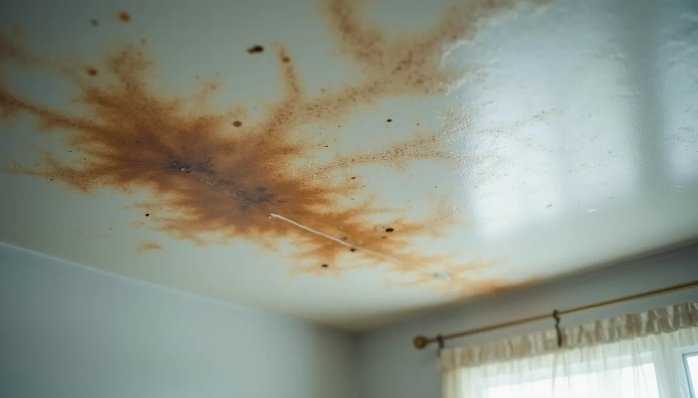
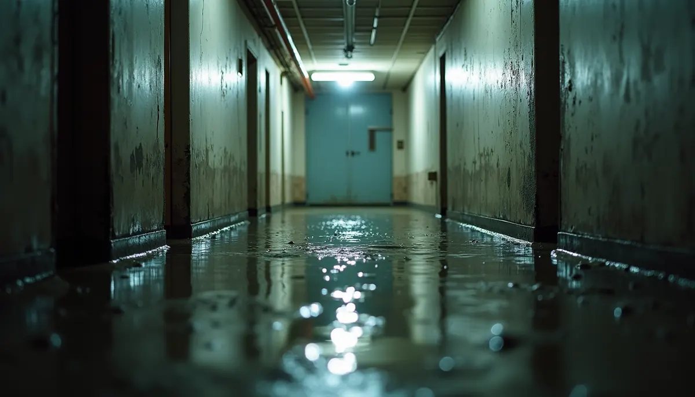

Every homeowner knows the feeling: the anxiety that creeps in when you notice a drip, a stain on the ceiling, or a spike in your water bill. These signs can indicate a water leak, and finding the source often feels like a daunting task. It can seem like a game of hide-and-seek, where the stakes are high and the consequences can impact both your home's structure and your finances.
So, what makes locating a water leak so difficult?
1. Hidden Pathways
Water pipes are frequently hidden behind walls, beneath floors, or in ceilings, making visual inspections challenging. A small leak can travel along joists or within insulation before leaving visible signs.
For instance, a leak behind a bathroom wall might not show itself until the water has soaked through several feet of drywall. In homes with a complex layout, this concealment leads to frustration and prolongs the time it takes to identify the source.
2. Capillary Action
Water has a unique ability to defy gravity. It can wick upwards or sideways through porous materials like drywall, wood, and concrete. You might notice a damp spot several feet away from the actual leak source.
Consider this: if a leak occurs within the floorboards, the visible signs could appear on the ceiling below. This unpredictable movement can lead to incorrect assumptions about the leak’s origin, leaving homeowners puzzled as to where to focus their repair efforts.
3. Intermittent Leaks
Not all leaks are consistent. Some may only occur when specific fixtures are used or during periods of high water pressure. This sporadic nature makes it tough to replicate the conditions under which the leak occurs.
For example, a sink that leaks only when the faucet is fully turned on can leave you doubting your own observations. This uncertainty can make homeowners question their senses, contributing to the overall frustration of locating the issue.
4. Tiny Orifices, Big Problems
Even the smallest pinhole leak can release an astonishing amount of water over time. In fact, a pinhole leak can waste over 10,000 gallons of water annually if left undetected.
These tiny openings are hard to spot and often lead to long-term damage. A slow, steady drip may not reveal its presence until substantial damage has already occurred, catching homeowners off guard.
5. Multiple Potential Sources
Water damage can stem from various sources, making it hard to pinpoint the exact cause. Issues could arise from your roof, plumbing, or faulty appliances.
For example, if you notice water pooling near your refrigerator, it could be caused by either a failed water line or a roof leak. Sorting through these possibilities can lead to costly trial-and-error repairs, wasting both time and money.
6. Age of Infrastructure
Older homes often feature outdated plumbing systems that are more susceptible to leaks. The wear and tear can create vulnerabilities, making leak detection even more difficult.
A study shows that homes built before 1970 are more likely to experience plumbing issues. Navigating these aging systems can be challenging since prior repairs may obscure the original layout, adding to the complexity of finding leaks.
7. Environmental Factors
External conditions like rainfall can make identifying leaks harder. During rainy seasons, heavy precipitation can exacerbate existing issues, causing confusion about where the leak is originating.
For example, water damage in a basement might lead homeowners to believe the issue is due to a plumbing failure, while it could actually stem from poor drainage outside. Recognizing how these factors affect your home is essential for effective leak detection.
Taking Action Against Leaks
Finding a water leak can feel overwhelming, but understanding these challenges can streamline the process. If you're facing ongoing water concerns, seeking professional help can save you both time and stress. Skilled plumbers utilize advanced technology and years of experience to quickly locate leaks, helping you protect your home’s integrity and your finances.
Consider reaching out to professionals like Angle Stop Plumbing, who offer comprehensive leak detection services. They can help pinpoint leaks accurately and prevent further damage. With the right support, you can tackle any water leak issue effectively.

